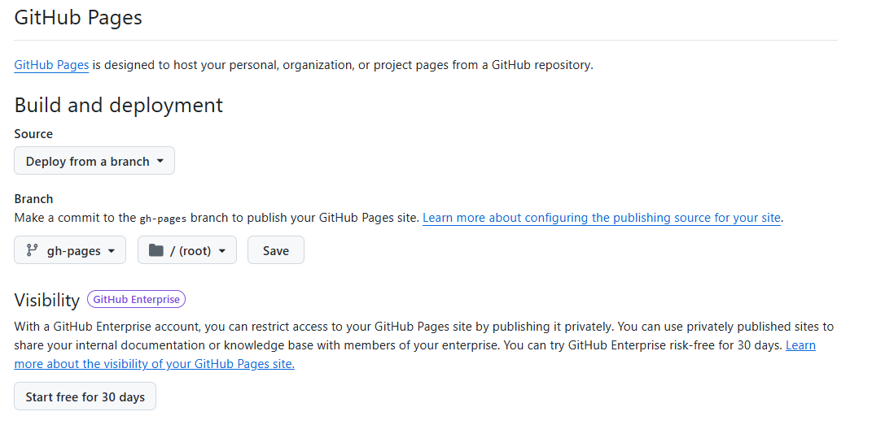
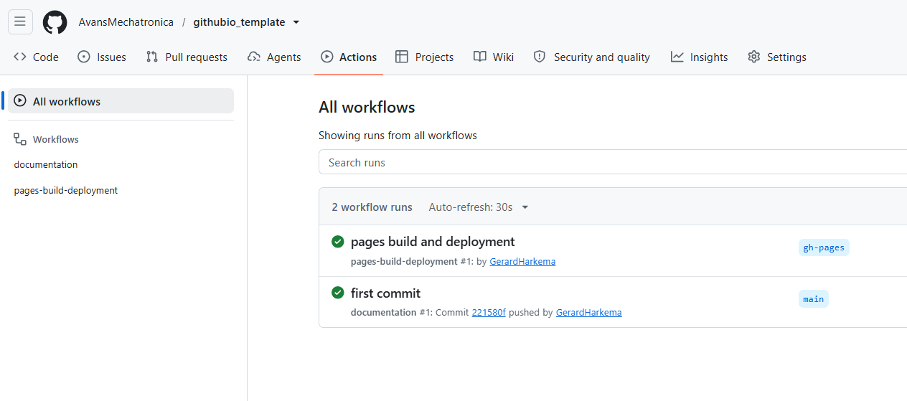

Gebruik van de Githubio template
Structuur van de template
De template is opgebouwd uit de volgende onderdelen:
Overzichtspagina: Bevat een korte introductie en uitleg over de template.
Index: De hoofdpagina van de documentatie met een overzicht van alle secties.
Licentiepagina: Geeft informatie over de licentie waaronder de template wordt verspreid.
Je kunt deze onderdelen uitbreiden met extra secties en pagina’s afhankelijk van de behoeften van je project.
Notitie
Je kunt de bestanden (met uitzondering van de .git-map) toevoegen aan je eigen project. Doe dat in de hoofdmap van je project. Nadat je dit gedaan hebt, zal automatisch de documentatie worden gegenereerd op de Githubio-pagina van je project.
Gebruik van de template
Om de template te gebruiken, volg je de onderstaande stappen:
Kloon de template: Maak een kopie van de template naar je eigen GitHub-repository.
git clone https://github.com/githubio_template/repository.git
Geef de repository een nieuwe naam: Hernoem de lokale map naar de gewenste naam voor je project.
Verwijder .git: Verwijder de bestaande Git-configuratie om een schone start te maken met je eigen repository.
rm -rf .git
Remove-Item -Recurse -Force .git
rmdir /s /q .git
Maak een nieuwe GitHub-repository aan: Ga naar GitHub en volg de instructies om een nieuwe repository aan te maken.
Pas de inhoud aan: Bewerk de overzichtspagina, index en licentiepagina om deze aan te passen aan je project.
Voeg extra secties toe: Indien nodig kun je extra pagina’s en secties toevoegen om je documentatie uit te breiden.
Publiceer op GitHub Pages: Zorg ervoor dat je repository is ingesteld om GitHub Pages te gebruiken, zodat je documentatie online beschikbaar is (zie hieronder). Gebruik hiervoor het
git push-commando om je wijzigingen naar de remote repository te sturen.
git add .
git commit -m "<JOU COMMENTAAR HIER>"
git push
Githubio publicatie
Om je documentatie op GitHub Pages te publiceren, volg je deze stappen:
Ga naar de instellingen van je GitHub-repository.
Scroll naar beneden naar het gedeelte “Pages”.

Selecteer de bron voor je GitHub Pages-site (meestal de
main-branch en de mapgh-pages).Klik op “Opslaan” om de instellingen te bevestigen.
Na het voltooien van deze stappen wordt je documentatie gepubliceerd en is deze online beschikbaar via de opgegeven URL.
Valkuilen
Bij het gebruik van deze template zijn er enkele valkuilen waar je op moet letten:
Zorg ervoor dat je de
.git-map verwijdert voordat je een nieuwe repository aanmaakt, anders kunnen er conflicten ontstaan.Controleer altijd of de bron voor GitHub Pages correct is ingesteld, anders wordt je documentatie mogelijk niet gepubliceerd.
Pas de inhoud van de overzichtspagina, index en licentiepagina aan om te voorkomen dat er verouderde informatie wordt weergegeven.
Houd rekening met de structuur van je project, zodat de documentatie correct wordt gegenereerd.
Monitor de status van je
git pushin het action logboek om te controleren of de documentatie correct wordt gepubliceerd.
